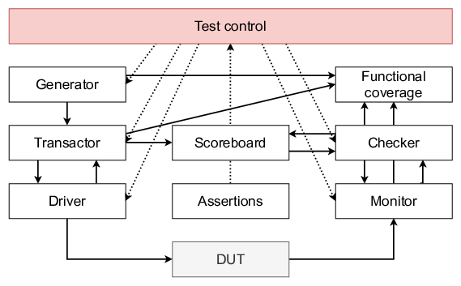
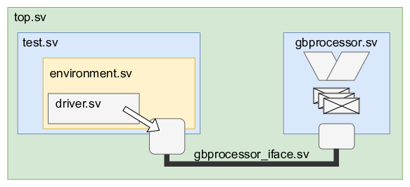
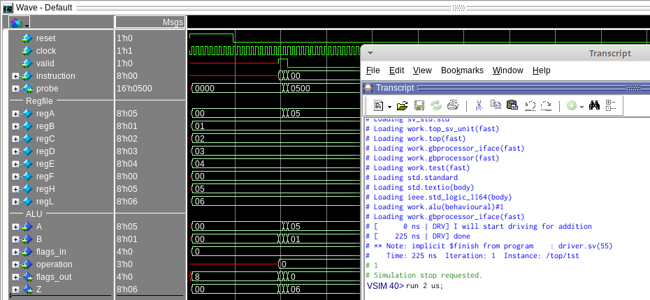

Some of you might be thinking: “That assignment and those exercises did not differ too much from the classical approach.”. If so, you’re right. From this point on, however, the layered testbench will be climbed.

The concept in SystemVerilog is to build a layered testbench:
During the first assignment, you’ve driven the DUT directly. A total of 256 different testvectors were thrown at the DUT. The next step is to do this in a more SystemVerilog-like way.
class driver;
/* Virtual interface */
virtual gbprocessor_iface ifc;
/* Constructor */
function new(virtual gbprocessor_iface ifc);
this.ifc = ifc;
endfunction : new
/* run_addition method */
task run_addition();
string s;
$timeformat(-9,0," ns" , 10); /* format timing */
/* print message */
s = $sformatf("[%t | DRV] I will start driving for addition", $time);
$display(s);
/* start with reset */
this.ifc.reset <= 1'b1;
repeat(10) @(posedge this.ifc.clock);
this.ifc.reset <= 1'b0;
repeat(10) @(posedge this.ifc.clock);
/* execute instructions */
this.ifc.valid <= 1'b1;
this.ifc.instruction <= 8'h81;
@(posedge this.ifc.clock);
this.ifc.valid <= 1'b1;
this.ifc.instruction <= 8'h82;
@(posedge this.ifc.clock);
this.ifc.valid <= 1'b0;
this.ifc.instruction <= 8'h00;
@(posedge this.ifc.clock);
/* print message */
s = $sformatf("[%t | DRV] done", $time);
$display(s);
endtask : run_addition
endclass : driver
Behold … the first class: driver.
As you might recognise from other OO-languages, this class ‘driver’ has:
It is pointed out that the this keyword should be used to distinguish between a local variable and a class member. In the line this.ifc = ifc; the left-hand ifc targets the class member. The right-hand occurrence of ifc targets the local variable that was given as a function argument.
In the example, there is only one method run_addition(). When this method is called, it resets the DUT and then gives it 2 instructions.
Finally, there is one more important keyword: virtual. In SystemVerilog the interface is considered static. This makes sense as there should be only one interface that connects the test environment with the DUT. Classes, in contrast, are dynamic by nature. This also comes natural as class instances (or objects) are created dynamically.
Because of this duality, it is not allowed to declare an interface within a class. The solution for this is to work with a placeholder that will be substituted with the actual interface. This is achieved by the virtual keyword. A virtual interface is a variable of a certain interface type that is used to facilitate access to the interface from within in a class.
TL;DR for the interface: use virtual.
Keeping in mind one of the big benefits from SystemVerilog, being modularity and re-usability, it should not come as a surprise that the amount of files and hierarchy is substantial. Don’t let that scare you !! The image below shows a simple example.

The highest block is the testbench: top(.sv). On the righthand-side there is the gbprocessor(.sv). Note that the design itself could also consist of many files. The interface, ALU_iface(.sv), is already discussed but is now simply stored in a separate file.
The software is all contained and managed by test(.sv). For now, the only thing this does is instantiating an environment(.sv). The purpose of this environment will become clear later on in these labs. Finally, the only thing the environment currently does is instantiating the driver(.sv).
Hehe, that was a lot of files and a seemingly pointless hierarchy. Below are basic examples of: top.sv, test.sv, and environment.sv.
`include "gbprocessor_iface.sv"
`include "test.sv"
module top;
logic clock=0;
// clock generation - 100 MHz
always #5 clock = ~clock;
// instantiate an interface
gbprocessor_iface gb_iface (
.clock(clock)
);
// instantiate the DUT and connect it to the interface
gbprocessor dut (
.reset(gb_iface.reset),
.clock(clock),
.instruction(gb_iface.instruction),
.valid(gb_iface.valid),
.probe(gb_iface.probe)
);
// SV testing
test tst(gb_iface);
endmodule : top
`include "gbprocessor_iface.sv"
`include "environment.sv"
program test (gbprocessor_iface ifc);
environment env = new(ifc);
initial
begin
env.run();
end
endprogram : test
`include "driver.sv"
class environment;
virtual gbprocessor_iface ifc;
driver drv;
function new(virtual gbprocessor_iface ifc);
this.drv = new(ifc);
endfunction : new
/* Task : run
* Parameters :
* Returns :
**/
task run();
this.drv.run_addition();
endtask : run
endclass : environment
If you add the driver.sv, as illustrated above, you can start running the simulator. The result of this should look like shown below.
